Онлайн-школа · контент и воронки в Telegram
1,17 млн ₽ на двух воркшопах: воронка в боте, ИИ-менеджер и бесплатный марафон
TGX, онлайн-школа по продвижению в Telegram · контент-маркетолог, направление под ключ · май–август 2025
- 709 тыс. ₽142 покупателя воркшопа Telegram X: Трафик через бот и ИИ-менеджера
- 464 тыс. ₽62 покупателя воркшопа Telegram X: Контент за неделю после марафона
- 19%участников первого воркшопа купили второй
- +18–22%охват постов канала TGX
Данные: статистика Telegram-канала TGX и продажи воркшопов
Задача
Продавать платный воркшоп TGX через контент канала и воронки в Telegram. Когда школа запустила второй воркшоп, задача расширилась на его продажи.
TGX ведёт канал о продвижении и монетизации в Telegram. Первым школа запустила воркшоп Telegram X: Трафик, позже к нему добавился Telegram X: Контент.
Первый воркшоп
Telegram X: Трафик
Запуск Telegram-канала под свою услугу за 7 дней. На выходе:
- оформленный канал и стратегия роста
- запущенная реклама через TeleGraphyx
- первые подписчики и заявки
- план масштабирования
Второй воркшоп
Telegram X: Контент
Система контента, который продаёт продукты и услуги. Участник:
- выстраивает путь от первого касания до продажи через посты
- находит идеи, которые вовлекают и подводят к заявке
- собирает свою систему генерации контента
- использует ИИ для усиления экспертности
Обучение по Telegram продаётся тяжело: похожих курсов много, и аудитория заранее подозревает инфобизнес с громкими обещаниями.
Ответ на это недоверие давало происхождение школы. TGX запустили на базе агентства трафика Teletraf (500+ запущенных проектов, 150+ описанных кейсов) и сервиса продвижения TeleGraphyx (30 000 пользователей, 15 000 каналов, 50+ млн ₽ рекламного бюджета в месяц). На воркшопах команда учит тому, что каждый день делает на клиентских проектах.
Построение системы
Направление велось под ключ: контент-стратегия, посты канала, сценарий и тексты бота, сценарий видео, визуалы, промпт ИИ-менеджера и бесплатный марафон целиком. Финальный эфир марафона провёл основатель TGX Михаил Белокоз.
- Контент канала
- Воронка в боте
- ИИ-менеджер
- Марафон
1Контент канала
Контент-стратегия начиналась с аудитории. В ней семь сегментов: новички в Telegram, предприниматели, маркетологи, фрилансеры, эксперты и коучи, мамы в декрете и те, кто ищет удалённую работу. У всех четыре общие боли: о чём вести канал, где брать подписчиков, как зарабатывать и как расти дальше.
Под каждую боль заведена рубрика, у всех постов единая структура. Форматы чередуются: гайды, чек-листы, кейсы, ИИ-генераторы, подкасты и карусели. Пользу в посте можно забрать и применить сразу, поэтому его сохраняют и пересылают.
Канал работал в связке с Teletraf и TeleGraphyx: проекты экосистемы делали кросспостинг и перелинковывали трафик друг на друга. Подписчик TGX узнавал об агентстве и сервисе, аудитория агентства и сервиса узнавала о воркшопах.
2Воронка в боте
Это главная воронка воркшопа Telegram X: Трафик. Человек приходит в бот с рекламы или из канала, и бот ведёт его серией сообщений от знакомства до оплаты. Через бот пришли 65% покупателей первого воркшопа, около 92 человек.
Каждое сообщение снимает один вопрос перед покупкой: кто вы, работает ли это, смогу ли я сам, что говорят другие, что будет, если не получится. Кто готов раньше, покупает сразу, остальные идут дальше по прогреву.
- Видео
- Кейс
- Гайд
- Отзывы
- Гарантия
- Оффер
- «Ещё не решился? Смелее!»
- «Всё ещё думаешь? Пора»
- Дедлайн по цене
Оплата на любом шаге: кнопка «Участвовать в Telegram X» стоит в каждом сообщении
-
Старт
Приветствие
Бот обещает за 3 минуты рассказать, как запустить продажи в Telegram за 7 дней. В сообщении одна кнопка, «Смотреть видео».
Снимает вопрос: «Куда я попал и зачем мне это?»
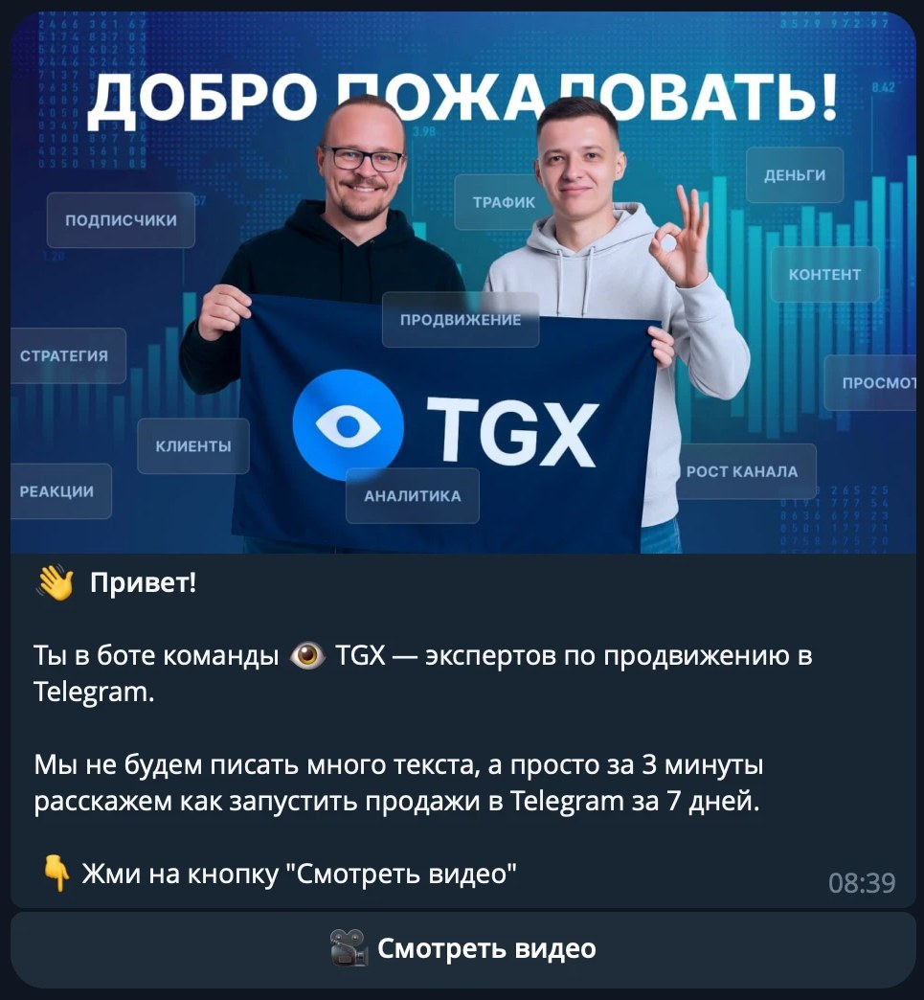
-
+10 минут
VSL-видео
VSL (video sales letter): продающее письмо в формате видео, слайды и спикер в кадре. Логика та же, что у продающего лонгрида: боль, доверие, решение, выгода, оффер.
Под видео пять пунктов, которые зритель узнает до конца: что ломает запуск каналов у 90%, кто стоит за TGX, как запуститься за 7 дней, где брать дешёвых целевых подписчиков и как быстро получать заявки. Доверие закрывает слайд «Кто мы?» со всей экосистемой: 500+ проектов Teletraf, 30 000 пользователей TeleGraphyx, 500 учеников TGX. Кнопка «Участвовать в Telegram X» стоит сразу под видео.
Снимает вопрос: «Кто вы такие и почему вам верить?»
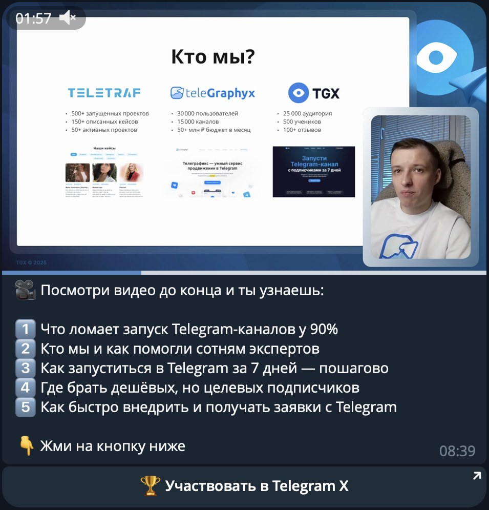
-
+30 минут
Кейс ученицы
История ученицы, которая пришла с каналом и без понимания, как набирать подписчиков. Первые подписчики появились на 5-й день, первая заявка на услугу пришла через 2 дня после запуска рекламы. В статье по кнопке разобраны инструменты: подписчик за 110 ₽ и рост CTR креативов в 2,4 раза.
Снимает вопрос: «Это работает у таких, как я?»
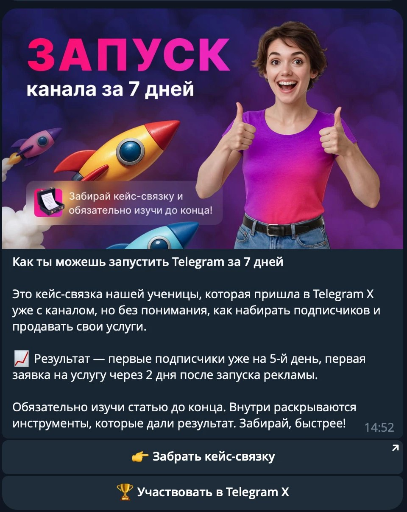
-
+1 час
Гайд
Авторский гайд «Как превратить Telegram в инструмент для своих услуг — с нуля за 7 дней». Четыре шага: тема и аудитория, оформление канала, закрытый канал с заявками, первая реклама. Человек проверяет свой канал по шагам и видит, сколько работы впереди.
Снимает вопрос: «Смогу ли я это сделать сам?»
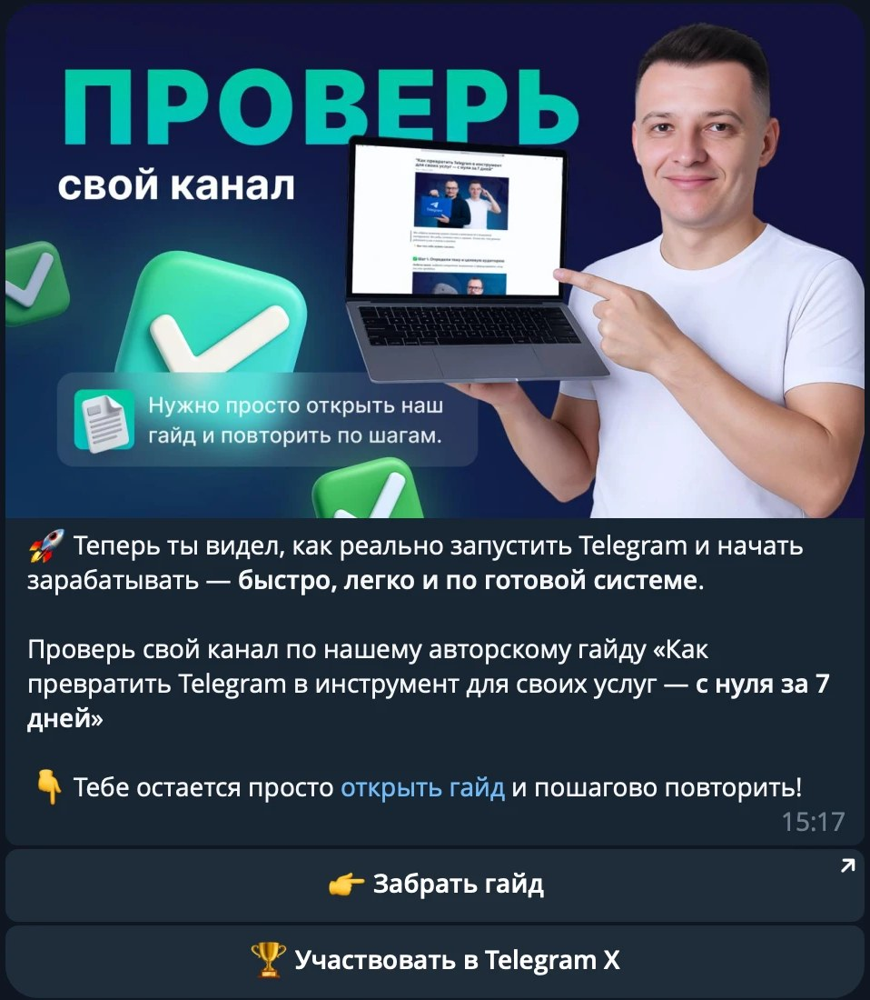
-
Утро, 10:00
Отзывы
Свежие отзывы экспертов, предпринимателей и фрилансеров. На обложке отзыв директолога, который подключил TeleGraphyx для клиента: история написана от первого лица, со скепсисом в начале.
Снимает вопрос: «Что говорят те, кто уже прошёл?»
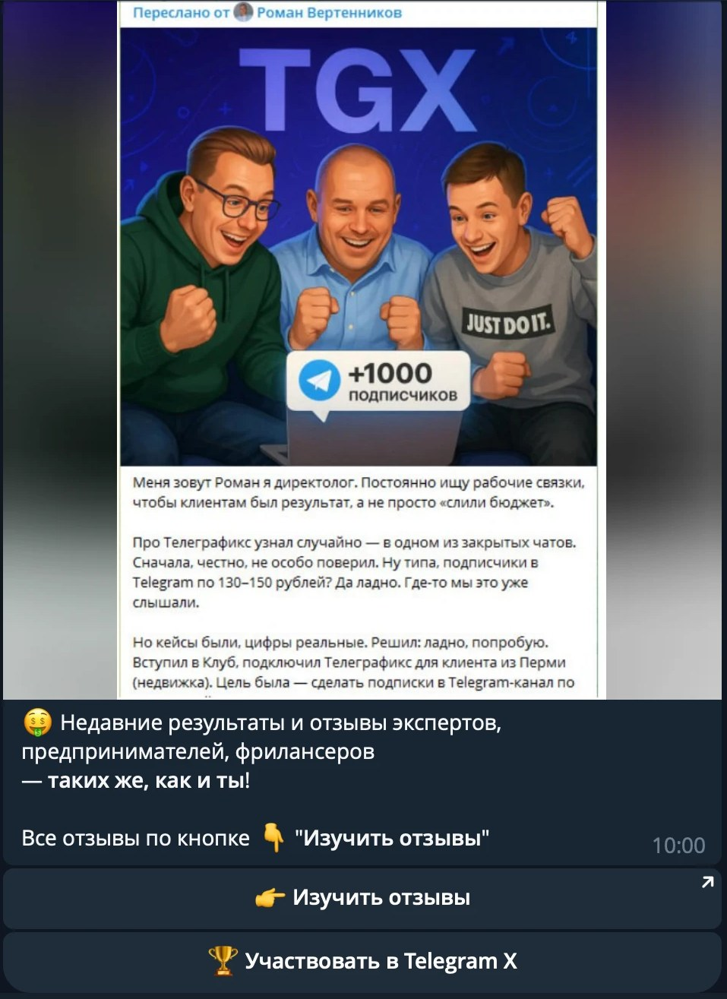
-
Вечер, 20:00
Гарантия
100% гарантия возврата: если не зайдёт, деньги вернут. Риск переходит с покупателя на школу, и против покупки остаётся один аргумент: потерянное время.
Снимает вопрос: «А если я заплачу, и не получится?»
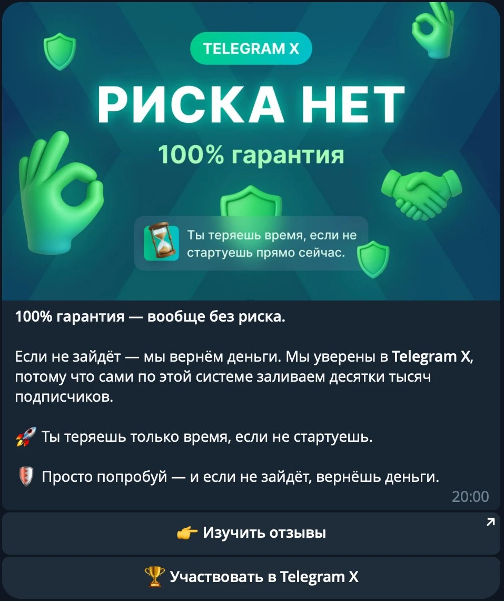
-
Утро, 10:00
Финальный оффер
Когда вопросы сняты, бот собирает всё в одно предложение: что человек сделает за 7 дней и чем воркшоп отличается от курса.
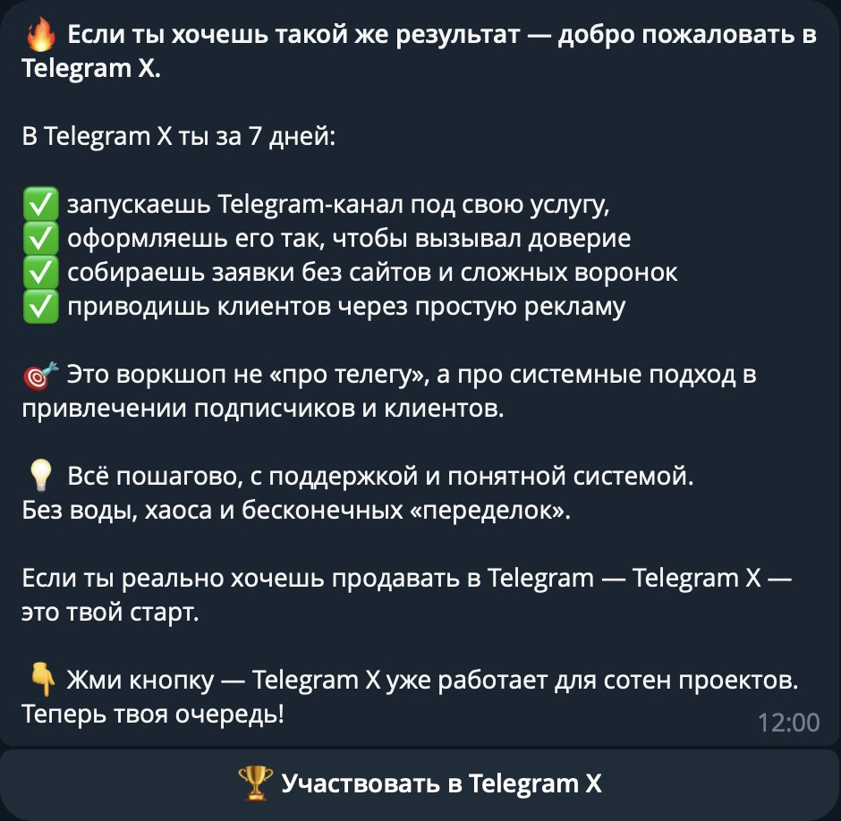
-
Рассылка
Дедлайн по цене
Рассылка по базе бота перед повышением цен: с 11 июля Базовый дорожал с 2 900 до 4 900 ₽, Профи с 5 900 до 9 900 ₽. Дедлайн дал тем, кто откладывал, повод купить сейчас.
Снимает вопрос: «Зачем покупать сегодня?»
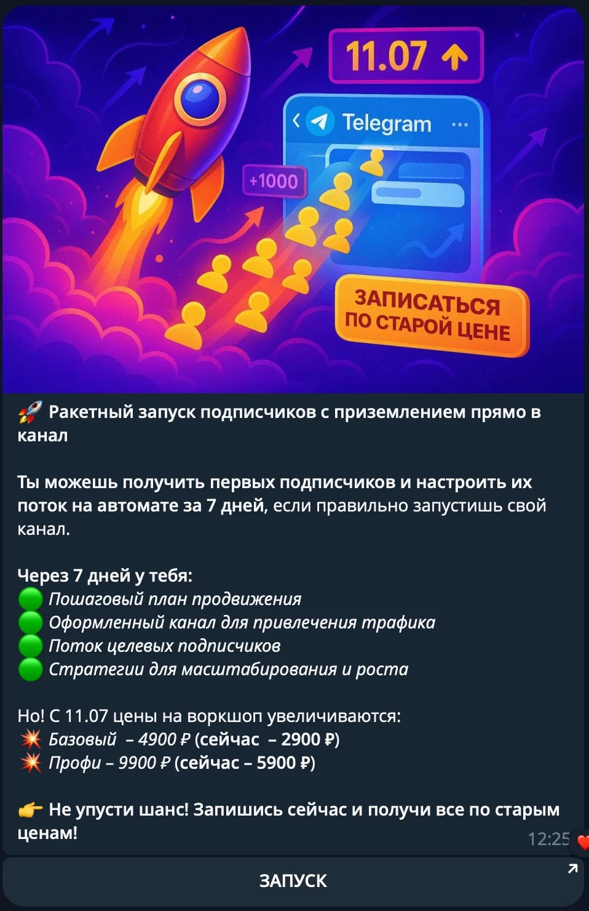
3ИИ-менеджер Макс
Параллельно с ботом тестировали вторую воронку. Посты канала перезаточили под один оффер, бесплатный план запуска канала от Telegram-маркетолога. Оффер вёл к Максу, ИИ-менеджеру в Telegram. Макс выяснял ситуацию человека, давал советы по продвижению и готовил план запуска.
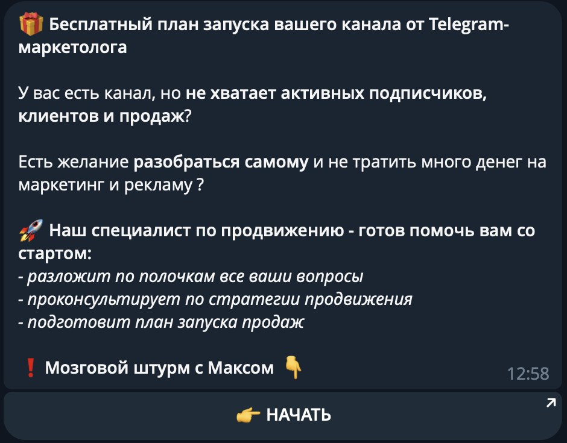
Для Макса написан развёрнутый промпт, который покрывает все ситуации диалога: роль и тон, алгоритм разговора, вопросы для квалификации, кейсы для примеров, ответы на возражения, follow-up для тех, кто взял паузу, и шаблоны на технические сбои. Макс ведёт разговор по шагам и задаёт по одному вопросу за раз:
- Где ты сейчас
- Что мешает расти
- Результат через 7 дней
- Кейсы
- Формат запуска
Через Макса пришли 35% покупателей первого воркшопа, около 50 человек. Главная задача Макса: квалификация. По ответам о целях, опыте и бюджете он отправлял человека в тот продукт экосистемы, который ему подходит:
4Бесплатный марафон по контенту
Второй воркшоп, Telegram X: Контент, продавался в основном через бесплатный марафон. Марафон шёл 14–22 июля в канале TGX. Его тема, продающий контент с помощью ИИ, пришлась на момент, когда интерес к нейросетям в контенте только начинал расти.
- Каждый выпуск давал готовый инструмент и показывал, чего ещё не хватает контентной воронке. Поэтому интерес переходил к следующему выпуску, а потом к эфиру.
- Финальный эфир закрывал вопросы подписчиков и заканчивался презентацией воркшопа.
- На следующий день рассылка дала запись эфира и открыла продажи с бонусным уроком по воронкам для тех, кто купит до старта.
-
Анонс
Старт 14 июля
Анонс бьёт в боль «контент набирает просмотры, но не приносит клиентов» и сразу обещает эфир в финале. Призыв один: перейти в TGX и включить уведомления.
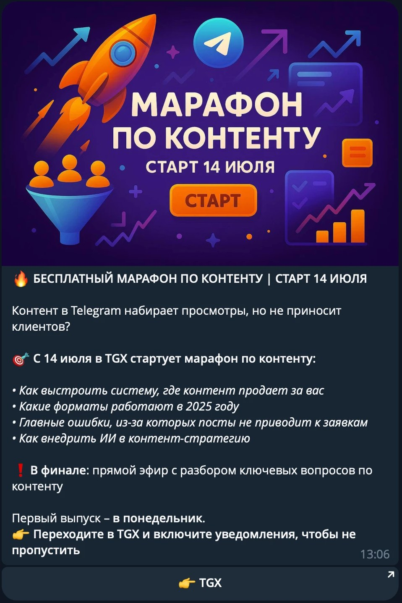
-
Выпуск 1
Автоматизация контента
PDF-гайд «Внедрение ИИ в контент» о том, с чего начать автоматизацию контента для Telegram, и бонус: общая формула промпта, чтобы нейросеть работала как ассистент. Время прочтения 5 минут.
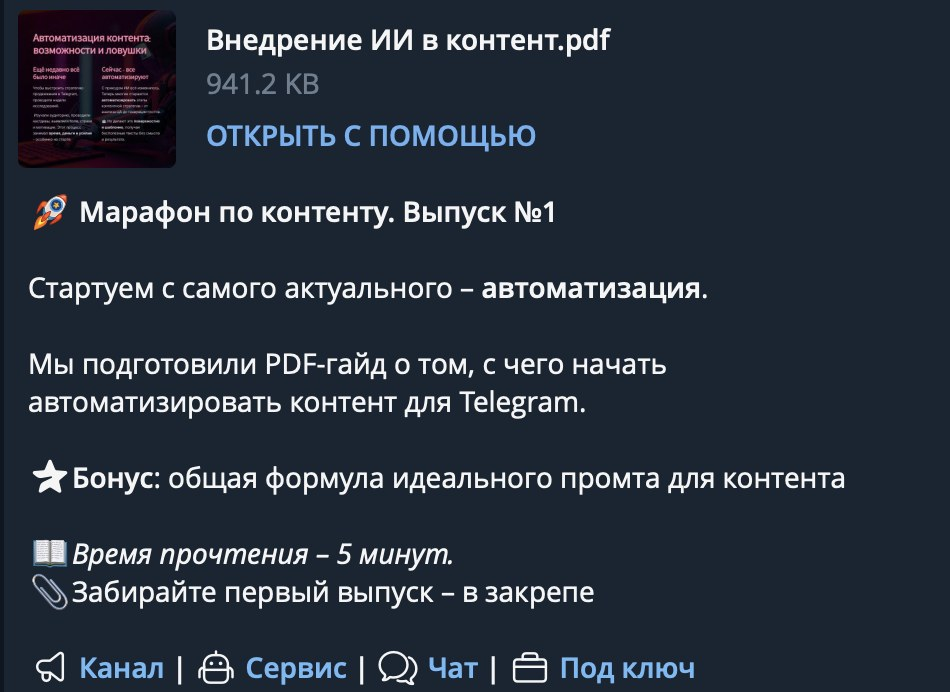
-
Выпуск 2
9 идей для постов
Выпуск начинается с вывода: одной формулы промпта мало, контентной воронке не хватает вовлечения и продающего оффера. Вовлечение закрывает этот выпуск: карусель из 9 универсальных идей для постов, от закулисья и провалов до анонсов с загадкой. У каждой идеи пример хука и начала поста.
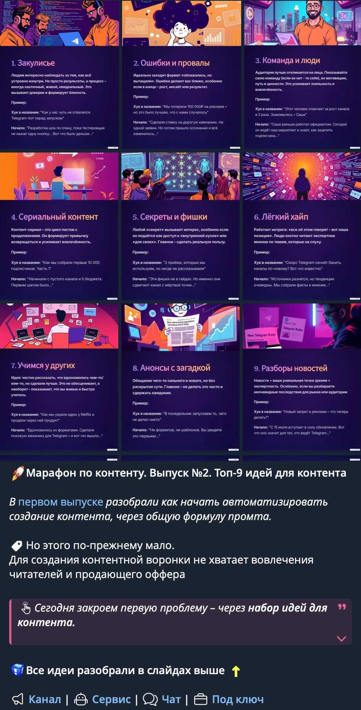
-
Выпуск 3
Продающий контент на основе оффера
Второй пробел из выпуска 2 закрывает аудиоподкаст на 4 минуты: почему сильный оффер лежит в основе продающего контента, как разложить продукт на шаги и вытащить из него смыслы, какие триггеры превращают интерес в покупку.
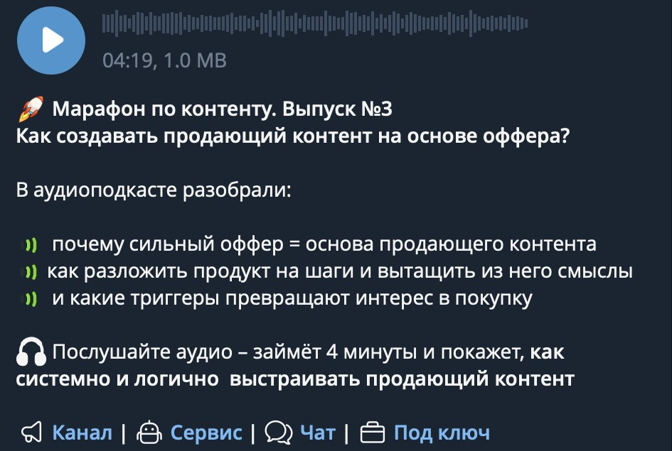
-
22 июля, 19:00
Финальный эфир
Прямой эфир в канале TGX без регистрации: как превращать подписчиков в клиентов, как строить логику постов от интереса к заявке, как сократить время на контент в 5 раз с ИИ. В конце эфира презентация воркшопа.
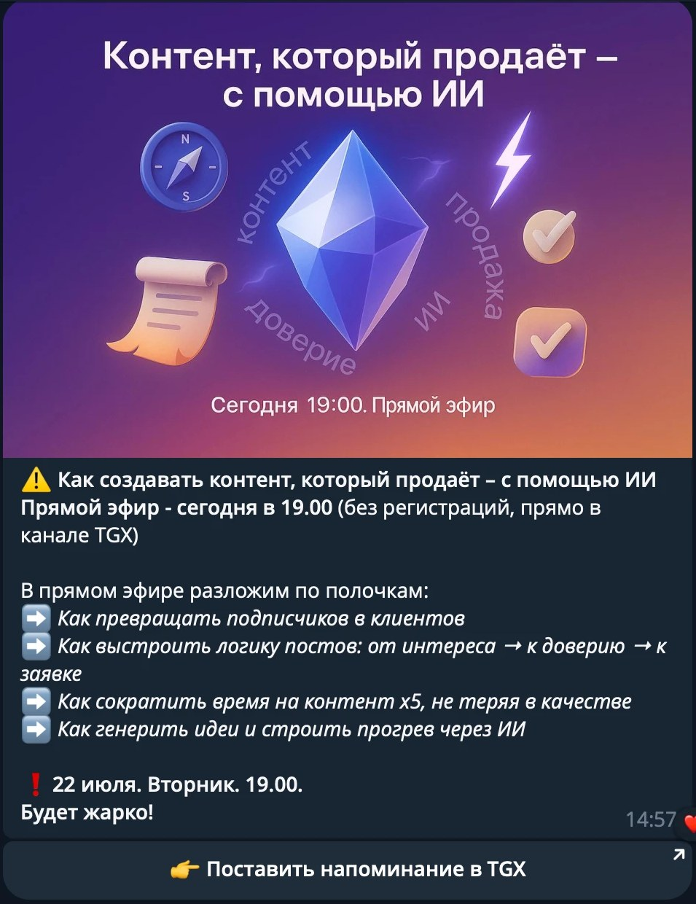
-
23 июля
Запись и старт продаж
Запись эфира для тех, кто не успел, и открытие продаж Telegram X: Контент. Участник прокачивает канал под свои продукты, настраивает прогрев и получает разбор куратора. До старта действует лучшая цена и бонусный урок по воронкам продаж.
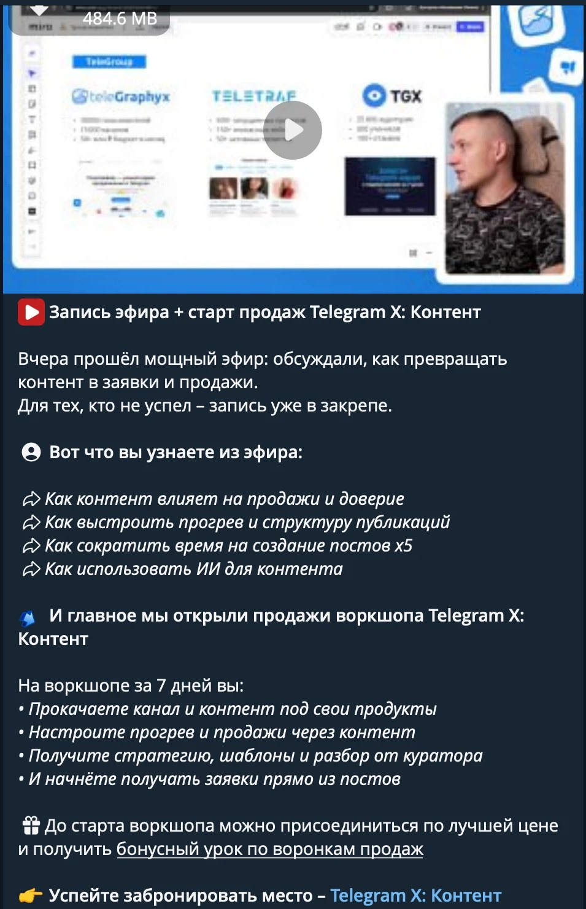
Результат
За май–август два воркшопа принесли 1 172 800 ₽: 709 000 ₽ первый и 463 800 ₽ второй.
Разницу в продажах объясняет модель запуска. Telegram X: Трафик работал как evergreen-продукт: с мая бот и Макс три месяца продавали его без остановки. Telegram X: Контент продавали классическим запуском: марафон собрал и прогрел аудиторию, окно продаж длилось неделю после эфира. За эту неделю второй воркшоп купили 62 человека.
- 19% участников первого воркшопа купили второй. Это около 27 человек, больше 40% всех покупателей Telegram X: Контент.
- Охват постов канала вырос на 18–22% к периоду до новой контент-стратегии, репосты выросли в 4–5 раз: с ~5 до 20–25 на пост.
Данные: статистика Telegram-канала TGX и продажи воркшопов
Почему это сработало
Доверие к школе дали агентство и сервис
TGX запустили на базе агентства Teletraf (500+ запущенных проектов, 150+ описанных кейсов) и сервиса TeleGraphyx (30 000 пользователей, 50+ млн ₽ рекламного бюджета в месяц). За обещанием «запуск за 7 дней» стояла команда, которая запускает каналы каждый день. Этот опыт был в каждом касании: в постах, на слайде «Кто мы?» в видео, в кейсах и отзывах. Первый воркшоп купили 142 человека на 709 000 ₽.
Два канала продаж первого воркшопа
Telegram X: Трафик продавали автоворонка в боте и ИИ-менеджер. Бот вёл человека через видео, кейс, гайд, отзывы и гарантию и дал 65% покупателей. Посты с оффером бесплатного плана запуска собрали CTR 12% от охвата и привели людей к Максу: он разбирал ситуацию, давал советы и квалифицировал заявку. Через Макса пришли остальные 35% покупателей.
Марафон на растущей теме
Марафон учил встраивать ИИ в создание контента в момент, когда интерес к теме только начинал расти. Каждый выпуск давал рабочий инструмент: формулу промпта, идеи для постов, разбор оффера. Аудитория получила пользу раньше, чем тема стала массовой, и за неделю продаж второй воркшоп купили 62 человека.
Первый воркшоп продавал второй
Кто прошёл Telegram X: Трафик, уже доверял команде. 19% участников вернулись за Telegram X: Контент, и они дали больше 40% его покупателей.